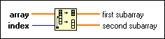

Split 1D Array Function
Owning Palette: Array VIs and Functions
Requires: Base Development System
Divides array at index and returns the two portions with the element of index at the beginning of second subarray.
The connector pane displays the default data types.

 Add to the block diagram Add to the block diagram |
 Find on the palette Find on the palette |